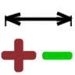

Prepare turning operations
For turning operations, you typically get a 3D model that consistently provides nominal dimensions. The details relevant to machining (undercuts, edge breakage, tolerances) are usually also missing. In addition to the 3D model, a 2D drawing is supplied together with this information. Transferring this information into the model can be a time-consuming and complicated task. The ideal solution is to generate a special V-sketch for turning in a fully automated manner, if possible. The following specialized commands are available for this purpose.
 | Insert predefined 2D undercuts. → → |
 | Create or change V-sketch for turning. → → |
Define horizontal dimensional constraints in a V-sketch for a turning contour. → → | |
 | Adapt the geometry and display of linear tolerance intervals for turning operations. → → |
Reset undercuts, fillets, and chamfers on sharp-edged corners. → → | |
 | Use criteria to find all required corners of a contour and round or chamfer them. → → |
Trim 2D corners. → → |